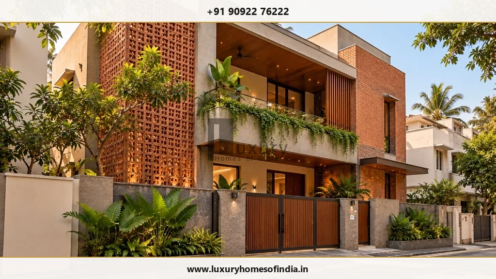
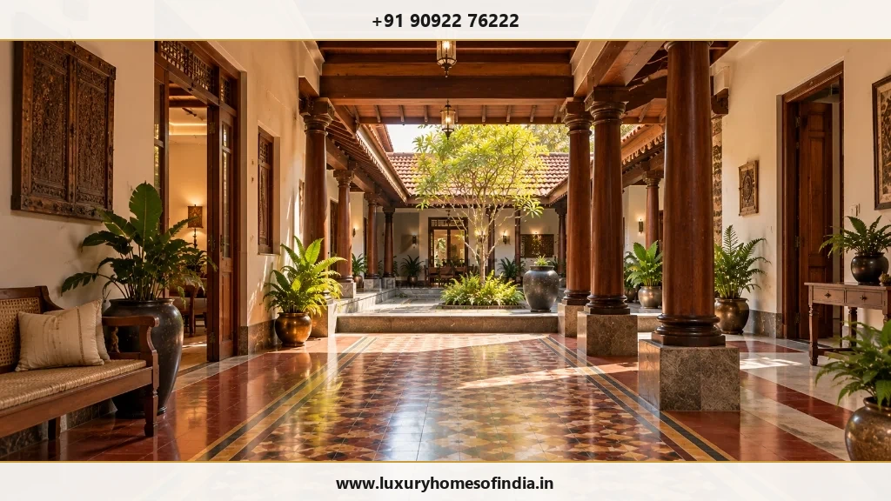
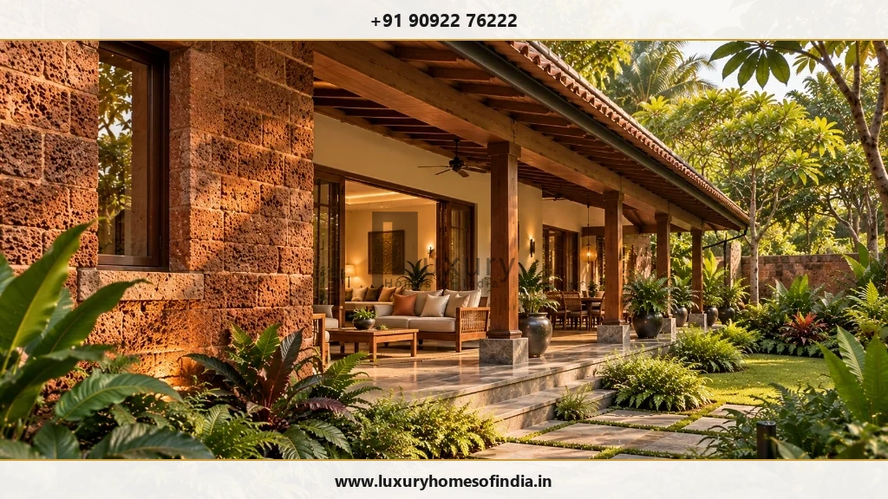
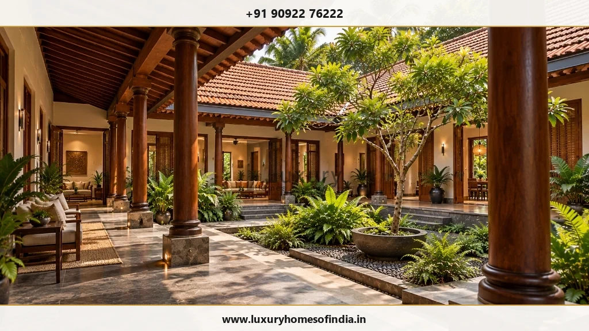

Luxury Home Architecture in Chennai
Architecture shaped around your lifestyle, your plot and your vision.
Executive Summary: Designing Luxury Homes in Chennai
A well-designed luxury home in Chennai is more than an impressive façade. It requires an integrated spatial plan where arrival sequences feel welcoming, privacy is considered from day one, and indoor living spaces connect seamlessly with shaded verandas and central courtyards. Luxury Homes of India connects architectural design, Vastu alignment, plot microclimate orientation, and structural execution under one coordinated workflow.
Architecture Shaped Around Your Lifestyle, Your Plot, and Your Vision
A well-designed luxury home is more than an impressive exterior facade. It is a residence where the entrance feels welcoming, rooms relate naturally to one another, family privacy is protected, and indoor spaces connect comfortably with shaded outdoor gardens.
At Luxury Homes of India (LHI), architectural design and space planning begin with your specific family requirements. We analyze your plot's microclimate, spatial relationships, architectural character, and technical constraints to turn design visions into buildable reality.

What Makes a Luxury Home Design Personal?
Luxury architecture does not have to adhere to a rigid, pre-packaged style. Whether your taste leans toward clean contemporary lines, natural stone accents, a central courtyard-focused plan, or regional South Indian heritage elements, authentic luxury architecture adapts to your lifestyle.
A comprehensive architectural brief evaluates:
- Arrival & Vehicular Circulation: Designing grand driveways, covered carports, pedestrian pathways, and distinct service entries.
- Privacy Boundaries: Structuring space so master suites, guest quarters, and family lounges maintain privacy from street traffic and adjoining properties.
- Daylight & Microclimate Defense: Orienting living spaces to capture natural daylight while deploying deep overhangs, louvers, and jaali screens to block tropical heat.
- Indoor-Outdoor Living: Integrating central courtyards, shaded verandas, private balconies, and landscaped pool decks into daily routines.
- Proportions & Material Character: Balancing solid masonry walls with glass openings, natural teak joinery, Sadahalli granite, and laterite stone.
- Future Flexibility: Designing floor plans to accommodate lift shafts, barrier-free elderly access, and evolving family requirements.

Bespoke Architectural Planning for Your Family
A Layout That Follows Everyday Routines
Space planning begins by mapping how your household moves through the home. A family that frequently hosts formal gatherings requires different spatial connections than one prioritizing quiet work-from-home suites, specialized art studios, or multi-generational privacy.
Privacy & Circulation Mapping
Circulation paths ensure guests reach formal entertaining rooms without crossing private family quarters. Wet kitchens, staff quarters, and utility yards connect discreetly to main dining and kitchen spaces.

Vastu-Aligned Architectural Layouts
LHI offers Vastu-aligned residential planning. By discussing Vastu preferences during initial briefing, directional placements are harmonized with plot geometry, natural cross-ventilation, and structural column efficiency.
Elevation Design That Works with the Floor Plan
An architectural elevation should be a direct expression of the floor plan behind it. Window proportions, balcony depths, solar screens, and rooflines must relate to room functions, sun angles, and weather resistance.
Architectural Planning & Execution Matrix
| Design Dimension | Key Architectural Focus | Technical & Site Deliverable |
|---|---|---|
| Site Orientation | Solar heat mitigation & breeze capture | 3D shadow analysis, East-West facade solar louvers, low-E glazing. |
| Spatial Zoning | Public vs. private family separation | Dimensioned floor plans, acoustic buffer corridors, private stairwells. |
| Courtyard Integration | Natural daylight & stack ventilation | Sub-surface drainage slopes, open-to-sky insect mesh, stone flooring. |
| Structural Coordination | Column-free spans & cantilevered decks | Coordinated RCC structural drawings, beam depth ceiling integration. |
| Water Management | Monsoon drainage & rainwater sumps | Terrace waterproofing details, rainwater harvesting sump calculations. |

Connecting the Home with Outdoor Spaces
Courtyards, gardens, and covered verandas extend interior living rooms when planned as integral architecture. Deep verandas shield interior walls from direct sunlight while providing dry outdoor seating during heavy northeast monsoon showers.

Bringing Architecture, Engineering, and Interiors Together
An architectural concept requires multi-disciplinary coordination before site construction begins. Structural column placements, ceiling drop heights for hidden AC ducting, electrical conduit pathways, and custom interior joinery must be resolved on paper to prevent expensive site alterations.
At Luxury Homes of India, architectural design is tightly coupled with structural engineering, interior execution, and turnkey villa construction.
Your 5-Step Architectural Design Journey
- Step 1: Briefing & Site Analysis: Establishing plot details, orientation, space requirements, budget parameters, and Vastu priorities.
- Step 2: Concept Layout Options: Developing floor plans, circulation paths, courtyard positions, and room adjacencies.
- Step 3: Architectural Character & 3D Refinement: Coordinating facade elevations, roof forms, material palettes, and window proportions.
- Step 4: Technical & Engineering Coordination: Integrating structural RCC framing, plumbing stacks, electrical conduits, and HVAC ducting.
- Step 5: Working Drawings & Scope Confirmation: Finalizing detailed construction drawings, material specifications, and tender BOQs.
Let's Discuss Your Home Design
Bring your ideas, plot details, and family requirements. Schedule an architectural consultation with Luxury Homes of India today.